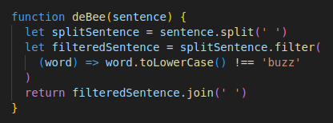

Discuss a time you were blocked on a simple problem
The problem was in the Gradebook Kata in which I was trying to put a new score into an array (a type of object
that can store data in a list-like fashion), the array was located inside an object, so I was trying to target the
array through various nested objects. I was having difficulty figuring out the syntax to get it working. Even
though I understood the parameters of the task, and had basically written it correctly, I was unaware of how
different notation (how you write the code) would affect what I could do to the array.
Usually to solve problems I don’t understand, I work through the problem from the start to see if I can identify
the point at which I stop understanding how it works.
I got to the point that I understood that VSCode was telling me that it didn’t recognise the parameter I was
passing it, but I couldn’t figure out why it was or what I could change about it that would make what I was trying
to do work. I was starting to get increasingly frustrated about the problem as Googling things about the problem
or trying to find similar problems wasn’t bringing up any helpful results. I eventually reached out to the Discord
to get another set of eyes to look at my code and perhaps point out something I was missing. After getting a
response, I realised that I needed to use a different form of notation so that the parameter I was passing would
be properly recognised, and the way I had written it otherwise was basically correct.
Discuss a time you elegantly solved a problem
On the JavaScript Kata problem “deBee” we were given the task of making a function that takes a string (a type of
object that holds text) and removing any part of the string that contained the word “buzz”. The hint for this kata
is that we needed to split the string into individual words so we could look over each word for the word “buzz”.
Figuring that we would need some time of method that would iterate over each word, and the fact that we had been
going over array methods recently, I looked at array methods that would be suitable for this task, in which I
found the .filter method. Mdn web docs had various examples of the .filter method being used, it’s a method that
iterates over an array and gives back a filtered down array that passes a test. I looked at the various examples
and realised I could pass each word that was being iterated over to a function that checks if the string in
lowercase doesn’t match the word “buzz”, it can be passed over, and to filter any that does contain the word
“buzz”. I made sure it would check if it was “buzz” if it was lowercase so it wouldn’t pass over any variants of
the word “buzz” that it could be checking. I ended up only needing a few lines of code for this purpose, and I
really like how clean my code ended up being.

Reflect on how confident you feel using problem-solving techniques
I feel fairly confident using most problem solving techniques, including reading error messages, using a search
engine, talking through my problem out loud, giving something I’m unsure of a go first to see where I lack
understanding, using console.log, and reflecting on what I do and do not know. I’m less confident in writing
adequate pseudocode, and asking others for help, I tend to do my best to exhaust all my other options before
asking for help, which ends up wasting a lot of time.
Reflect on a time you were reluctant to ask for help. Consider what made you reluctant to
do so. What might you try differently next time?
I’m usually reluctant to ask for help if I feel like I’m fairly close to figuring out the solution but something’s
just not clicking for me. I find that I waste a lot of time trying different solutions that usually aren’t
relevant to the problem anyway, or the way I was trying to do it the first time made the most sense to me and I
can’t figure out another way to do it, and it’s usually because I feel a little stupid for not being able to get
to the answer myself. I have a lot of pride in doing things by myself, which generally isn’t conducive to working
in a group. I need to work on asking questions a little bit sooner than I feel comfortable with, as it’s better
for my own productivity and morale.